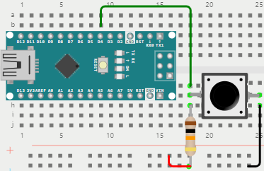
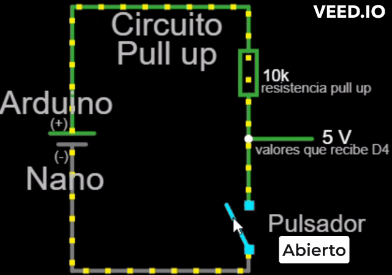
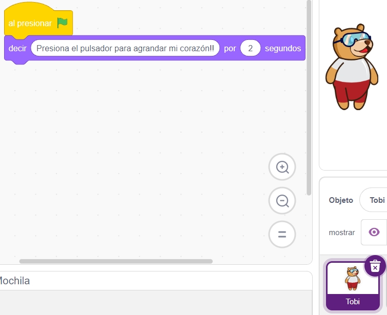
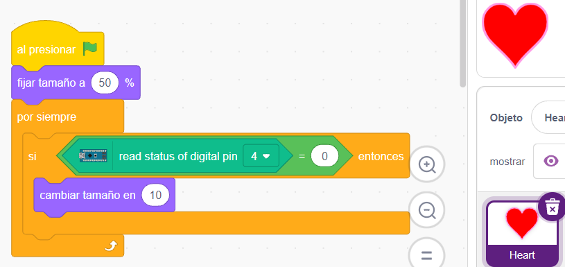

La resistencia pull up con el pulsador
No es conveniente conectar un pulsador directamente a un pin del Arduino, ya que puede hacer ingresar "ruidos" (pulsos falsos) que harán fallar su programación. Por ello, se debe "proteger" el pin de entrada conectando una resistencia pull up. A continuación vemos las conexiones y programación:
1°
Conexión de la resistencia pull up
El pulsador usado tiene dos patitas (vienen también de cuatro), una patita se conecta a una resistencia de 10 kOhm (llamada pull up) y a su vez también se conecta al pin D4 de Arduino Nano. El otro extremo de la resistencia se conecta a 5 volt (+). La otra patita del pulsador se conecta únicamente a Gnd (-).
En la siguiente simulación se puede observar el valor que le llega (ingresa) al pin D4 de Arduino Nano, cuando el pulsador está sin presionar (5 volt) y presionado (0 volt):

Estos valores son muy importantes, ya que se tienen en cuenta a la hora de la programación con Pictoblox.
2°
Programación del pulsador
Tobi se puso romántico y quiere que lo mimen un poco
A parte de Tobi, vamos a crear otro personaje/objeto/sprite, que puede ser un corazón tomado de la biblioteca (Heart), para que registre cada vez que se presione el pulsador.
|  | En el objeto/sprite/personaje Tobi, simplemente ubicamos el bloque decir ... por (2) segundos para que el usuario sepa lo que tiene que hacer: Presionar el pulsador para que el objeto corazón cambie de tamaño. |
|  | En el objeto/sprite/personaje Heart tenemos que leer permananetemente (por siempre) el pin digital D4 para ver si se presiona (0) el pulsador. En caso de ser presionado, el valor que ingresa por el pin es un 0 y entonces se aumenta el tamaño en un 10%, pasando de 50 a 60. Y así sucesivamente, cada vez que se presione el pulsador. |
3°
¡ A experimentar !
Se pueden pensar en diferentes acciones que se "disparen" a partir de ya saber "interceptar" cada pulsación sobre el pulsador:
- Que se prenda el led rojo conectado al pin 13.
- Que además de disparar alguna acción o evento (agrandar o disminuir el tamaño de un objeto, prender o apagar un led, etc) emitir un beep por el buzzer conectado al pin D5.
- Que la primera vez que se presione el pulsador se encienda el led rojo del semáforo, la segunda, el led amarillo y la tercera el led verde (pueden ir quedando encendido o se pueden ir apagando los anteriores).
Manos a la obra !!
Es una resistencia común (generalmente de 10 kOhm) que cumple la función de fijar un valor al pin de entrada (4) cuando el pulsador está sin presionar, para evitar el ingreso de "ruidos" o señales falsas.